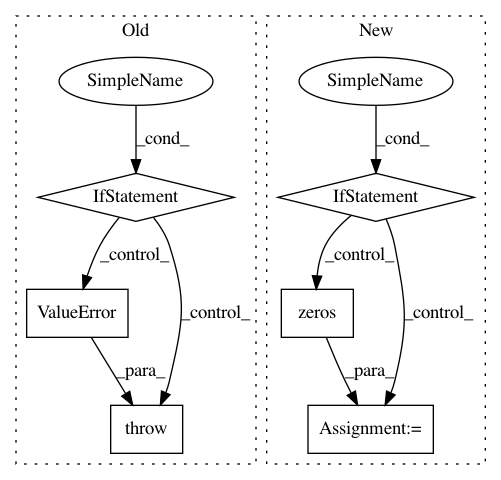

dc357b0e9d2bc40633f738997e8b7d17221c28fd,pyannote/audio/util.py,,from_numpy,#Any#Any#Any#,115
Before Change
`to_numpy`
if np.any(np.abs(y) > 1):
msg = "`y` must be a binary array (i.e. full of zeros and ones)."
raise ValueError(msg)
if isinstance(window, SlidingWindowFeature):
window = window.sliding_window
N, K = y.shape
After Change
window = precomputed.sliding_window()
if len(y.shape) < 2:
N, = y.shape
K = np.max(y)
y_ = np.zeros((N, K), dtype=np.int8)
for t, k in enumerate(y):
if k == 0:
continue
y_[t, k - 1] = 1
y = y_
N, K = y.shape
if labels is None:
labels = string_generator()
In pattern: SUPERPATTERN
Frequency: 3
Non-data size: 6
Instances
Project Name: pyannote/pyannote-audio
Commit Name: dc357b0e9d2bc40633f738997e8b7d17221c28fd
Time: 2018-06-29
Author: bredin@limsi.fr
File Name: pyannote/audio/util.py
Class Name:
Method Name: from_numpy
Project Name: nipy/dipy
Commit Name: 04bf4272fb79c2e9b1b83e0120518f771007257d
Time: 2014-12-11
Author: arokem@gmail.com
File Name: dipy/reconst/dti.py
Class Name:
Method Name: _wls_iter
Project Name: nipy/dipy
Commit Name: 04bf4272fb79c2e9b1b83e0120518f771007257d
Time: 2014-12-11
Author: arokem@gmail.com
File Name: dipy/reconst/dti.py
Class Name:
Method Name: _ols_iter